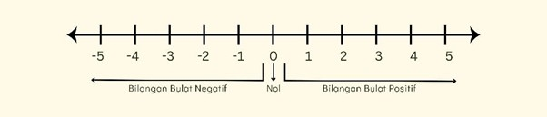
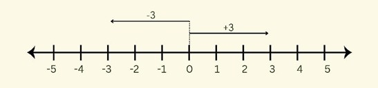
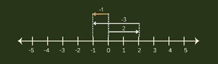

👋 Halo Juara Matematika!
Pernahkah kamu melihat suhu di kulkas yang minus (-)? Atau mengukur kedalaman penyelam di bawah laut? Di Puncak Jayawijaya, suhunya bisa mencapai -8°C, lho! Itu semua adalah contoh penggunaan Bilangan Bulat.
Bilangan bulat itu bukan cuma angka 1, 2, 3... tapi juga ada angka negatif (-1, -2, -3) dan pastinya angka nol (0). Ayo kita pelajari bersama!
📚 Yuk, Pahami Materinya!
Apa itu Bilangan Bulat?
Bilangan bulat adalah semua kumpulan angka yang utuh (tidak punya bagian pecahan atau desimal). Angka ini sering kita pakai sehari-hari, misalnya untuk menghitung suhu, ketinggian, atau untung-rugi.
[Image of a number line showing positive integers, negative integers, and zero]Bilangan bulat terdiri dari 3 kelompok:
- Bilangan Bulat Positif (Bilangan Asli): Ini adalah angka yang biasa kita pakai menghitung: 1, 2, 3, 4, ... dan seterusnya.
- Bilangan Nol: Ya, angka 0 itu sendiri!
- Bilangan Bulat Negatif (Lawan Bilangan Asli): Ini adalah "lawan" dari bilangan positif: -1, -2, -3, -4, ... dan seterusnya.
Memakai Garis Bilangan
Cara paling gampang untuk mengerti bilangan bulat adalah pakai Garis Bilangan.
- Angka Nol (0) ada di tengah.
- Angka Positif (+) ada di sebelah KANAN 0. Semakin ke kanan, nilainya semakin besar.
- Angka Negatif (-) ada di sebelah KIRI 0. Semakin ke kiri, nilainya semakin kecil.
Penjumlahan Bilangan Bulat
Saat menjumlahkan di garis bilangan, kita pakai panah. Ingat aturan mainnya ya!
- Bilangan Positif (+) artinya panah bergerak ke KANAN.
- Bilangan Negatif (-) artinya panah bergerak ke KIRI.
Contoh: 2 + (-3) = -1
Artinya: Mulai dari 0, maju (ke kanan) 2 langkah. Lalu, mundur (ke kiri) 3 langkah. Berhenti di angka -1!
[Image of a number line calculation showing 2 + (-3) = -1] Pengurangan Bilangan Bulat
Ini dia kuncinya: Mengurangi itu SAMA DENGAN Menambah dengan Lawannya.
- Lawan dari 5 adalah -5.
- Lawan dari -4 adalah 4.
Jadi, 2 - 3 itu sama saja dengan 2 + (-3).
Gampang, kan?
Contoh: -2 - (-3) = 1
Sama dengan: -2 + (Lawan dari -3) →
-2 + 3 = 1. (Mundur 2, maju 3, berhenti di 1).

🧠 LKPD Interaktif: Bilangan Bulat
Ayo uji pemahamanmu! Selesaikan 3 bagian latihan di bawah ini.
A. LKPD Penjumlahan Bilangan Bulat
- Siswa dapat menentukan hasil penjumlahan bilangan bulat.
- Siswa dapat menjumlahkan bilangan positif dan negatif.
1. Hasil dari 15 + (-8) adalah...
2. Hasil dari -7 + (-5) adalah...
3. Hasil dari -10 + 15 adalah...
B. LKPD Pengurangan Bilangan Bulat
- Siswa dapat menentukan hasil pengurangan bilangan bulat.
- Siswa dapat mengubah operasi pengurangan menjadi penjumlahan.
1. Hasil dari 10 - 14 adalah...
2. Hasil dari 8 - (-5) adalah...
3. Hasil dari -12 - (-10) adalah...
C. Soal Cerita
- Siswa dapat memecahkan masalah soal cerita sehari-hari.
- Siswa dapat menerapkan konsep penjumlahan & pengurangan.
1. Suhu di sebuah kota pada pagi hari adalah -5°C. Pada siang hari, suhunya naik 15°C. Berapa suhu kota tersebut pada siang hari?
2. Seekor lumba-lumba berada 3 meter di bawah permukaan laut (-3 m). Kemudian, ia melompat setinggi 7 meter ke atas. Di ketinggian berapakah lumba-lumba itu sekarang?
3. Dalam sebuah kuis, tim A mendapat skor 25, tetapi kemudian mendapat penalti (pengurangan) 30 poin. Berapa skor akhir tim A?